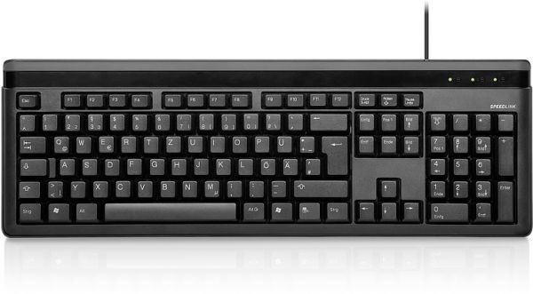

Input Device Definition: A piece of equipment/hardware which helps us enter data into a computer is called an input device. For example keyboard, mouse, etc.
Output Device Definition: A piece of equipment/hardware which gives out the result of the entered input, once it is processed (i.e. converts data from machine language to a human-understandable language), is called an output device. For example printer, monitor, etc.
examles on input devices :
keyboard
A simple device comprising keys and each key denotes either an alphabet, number or number commands which can be given to a computer for various actions to be performed It has a modified version of typewriter keys The keyboard is an essential input device and computer and laptops both use keyboards to give commands to the computer
mouse
It is also known as a pointing device Using mouse we can directly click on the various icons present on the system and open up various files and programs A mouse comprises 3 buttons on the top and one trackball at the bottom which helps in selecting and moving the mouse around, respectively In case of laptops, the touchpad is given as a replacement of the mouse which helps in the movement of the mouse pointer
example on output devices
monitor